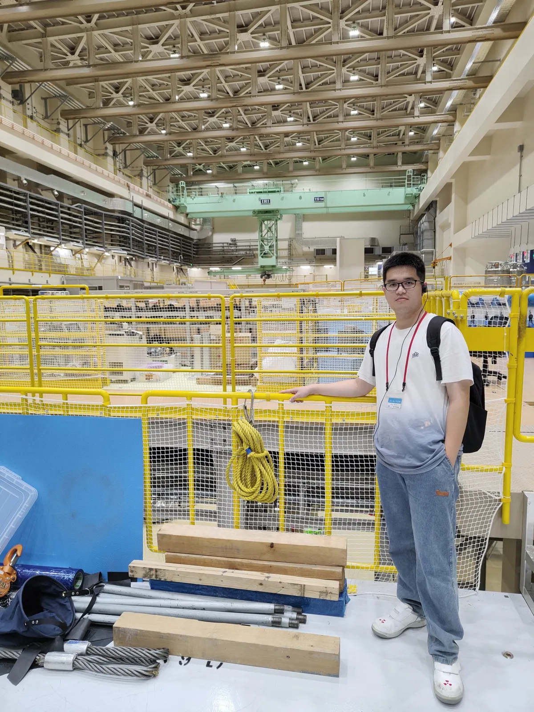
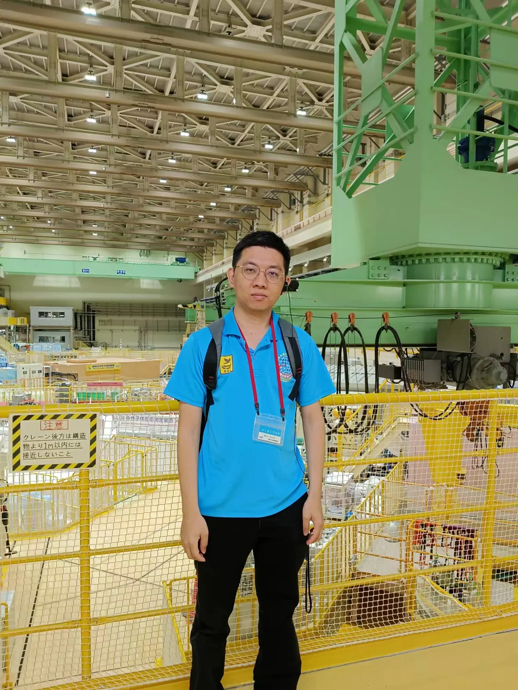
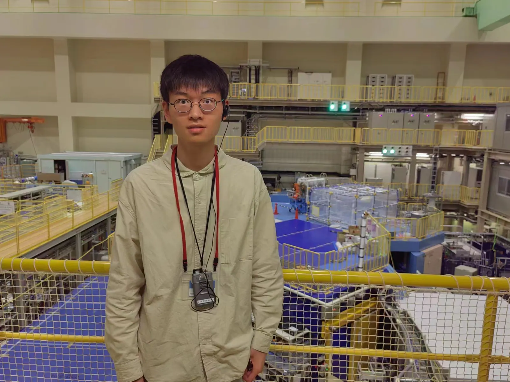

From June 11 to 15, our team members Tianqi Hu, Jun Kai Ng, and Yonghao Zeng made their first trip to Japan. During the visit, they took part in academic activities at KEK, J-PARC, and Ochanomizu University (including the 24th New Physics Forum on June 13), all centered on muon physics and new physics beyond the Standard Model. They also gave plenary talks in a dedicated session for visitors from Shanghai Jiao Tong University (SJTU). Their accounts of the trip are shared below:


“The J-PARC Muon g-2/EDM Collaboration Meeting brought together leading scientists from Canada, the UK, and Japan to discuss the details of muon g-2/EDM theory and experiment. The meeting served as a forum for pioneering research and new ideas in this fascinating field. As guests, we had the opportunity to tour the J-PARC experimental facility and present the PSI muon EDM experiment. The in-depth discussions on the experiment’s design and on diverse topics, including EDM theory, cosmology, and dark matter, broadened our understanding. What I learned, particularly about the detector details, will greatly benefit my Ph.D. research project.” – Tianqi Hu


“Participating in the J-PARC Muon g-2/EDM collaboration meeting gave me, as a student deeply involved in the Fermilab g-2 experiment, a unique opportunity to understand this experiment. The comprehensive presentations and discussions offered insights into many aspects of experimental design – from the muon source and linac to the storage magnet, detectors, and computing. In my oral presentation, I encouraged our collaborators to explore the differences between the two experiments in their physics goals, experimental designs, and potential systematics. The tour of the J-PARC experimental site was an added bonus.” – Jun Kai Ng


“The in-person collaboration meeting at J-PARC was my first. It offered us, as members of the Fermilab Muon g-2 experiment, a chance to understand an experiment under construction from multiple perspectives – data analysis, hardware, data acquisition, and more. The presentations covered the experiment in detail along with its latest updates, and there were two invited talks on the future of muon g-2 and on lattice QCD calculations of muon g-2. During the meeting, I gave my first-ever oral presentation. Although it was nerve-wracking and I felt somewhat underprepared, it was a valuable learning experience and an enjoyable part of the trip!” – Yonghao Zeng